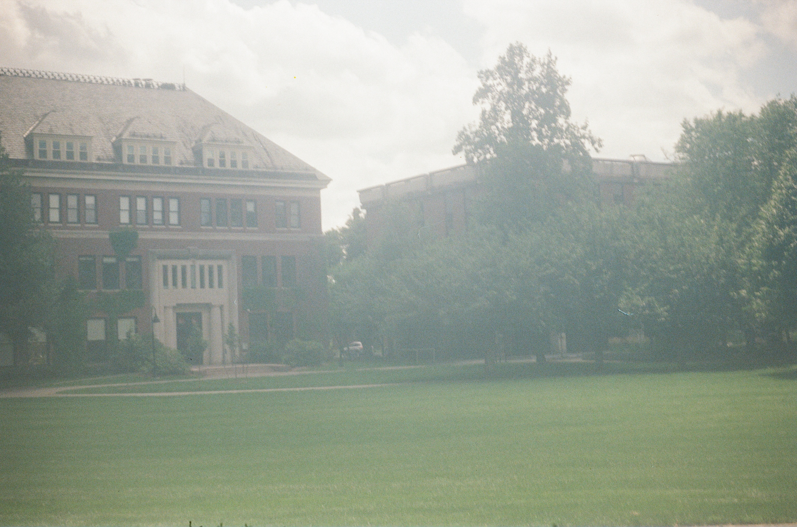

I am spending summer 2026 with the Widicus-Weaver group, where we research prebiotic molecules!

I have spent my first two years at Smith in the Biophysics lab of Candice Etson, where we use single-molecule techniques to investiate DNA-Protien interactions. My work has focused on constructing a Magnetic Tweezers appartus.
The astronomy and astrophysics classes I have taken at Smith include Introduction to Stellar Structure and Current Problems in Low-Mass Stars. In the latter, during my sophomore spring, I participated in a research project coined "Habitable Heroes."
In my free time I love to draw and paint. I stick mostly to graphite portraiture and gouache, although I also love alchohol markers and ink! I've also gotten into film photography recently. Thanks for stopping by!